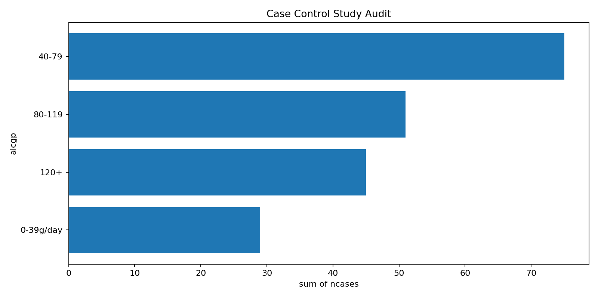

How are sampled cancer cases distributed by alcohol group?
The largest observed sum of ncases is 75.000 for 40-79. This ranking is descriptive, not a recommendation.

| segment | rows_used | metric | minimum | maximum |
|---|---|---|---|---|
| 0-39g/day | 23 | 29 | 0 | 5 |
| 120+ | 21 | 45 | 0 | 6 |
| 40-79 | 23 | 75 | 0 | 17 |
| 80-119 | 21 | 51 | 0 | 9 |
Case counts are sampled study counts, not population cancer incidence or risk; age and tobacco confound comparisons.
Use appropriate case-control odds models with adjustment for age and tobacco.